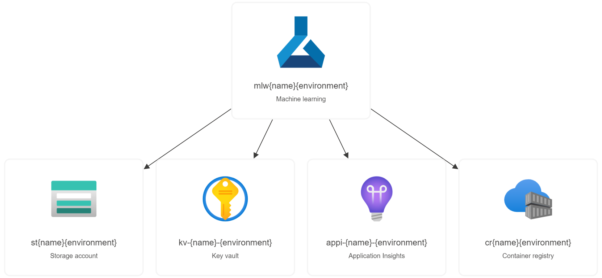

This deployment template specifies an Azure Machine Learning workspace, and its associated resources including Azure Key Vault, Azure Storage, Azure Application Insights and Azure Container Registry.
This configuration describes the minimal set of resources you require to get started with Azure Machine Learning.
| Provider and type | Description |
|---|---|
Microsoft.Insights/components |
An Azure Application Insights instance associated to the Azure Machine Learning workspace |
Microsoft.KeyVault/vaults |
An Azure Key Vault instance associated to the Azure Machine Learning workspace |
Microsoft.Storage/storageAccounts |
An Azure Storage instance associated to the Azure Machine Learning workspace |
Microsoft.ContainerRegistry/registries |
An Azure Container Registry instance associated to the Azure Machine Learning workspace |
Microsoft.MachineLearningServices/workspaces |
An Azure Machine Learning workspace instance |
| Name | Description |
|---|---|
| name | Name of the deployment |
| environment | The prefix to add to resource names e.g. dev / test / prod |
| location | The Azure region used for deployments |
| hbi_workspace | Specifies whether to reduce telemetry collection and enable additional encryption. |
If you are new to Azure Machine Learning, see:
If you are new to template development, see: